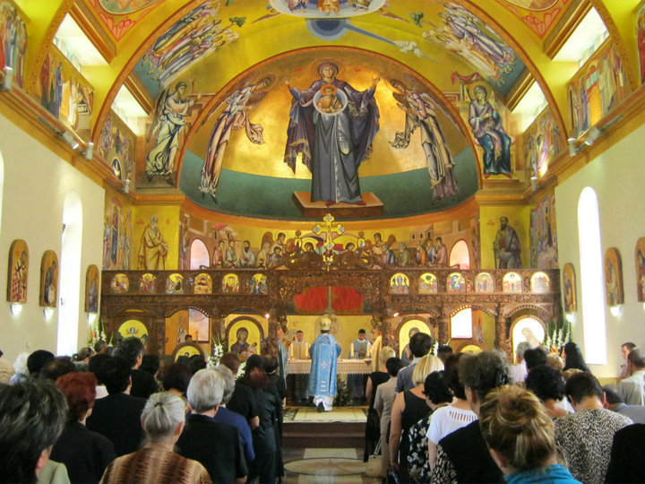

Dinheiro usado na Macedônia do Norte
Os muçulmanos constituem 33,3% da população.
A Macedônia do Norte tem a quarta maior proporção de muçulmanos na Europa, depois dos do Kosovo(95,6%), Albânia (61,9%) e Bósnia-Herzegovina (51%).
A maioria dos muçulmanos são albaneses, turcos ou ciganos, embora poucos sejam muçulmanos macedônios.
Os 1,3% restantes foram determinados como “não afiliados” por uma estimativa da Pew Research de 2010.
Ao todo, havia 1.842 igrejas e 580 mesquitas no país no final de 2011.
As comunidades religiosas ortodoxas e islâmicas têm escolas religiosas secundárias em Escópia, capital da Macedônia.
Há uma faculdade de teologia ortodoxa na capital.
A Igreja Ortodoxa Macedônia tem jurisdição sobre 10 províncias (sete no país e três no exterior), tem 10 bispos e cerca de 350 sacerdotes.
Um total de 30.000 pessoas são batizadas em todas as províncias todos os anos.